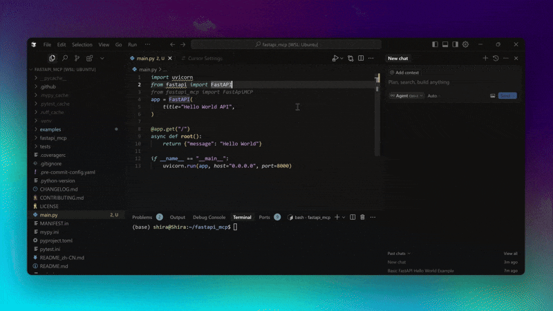
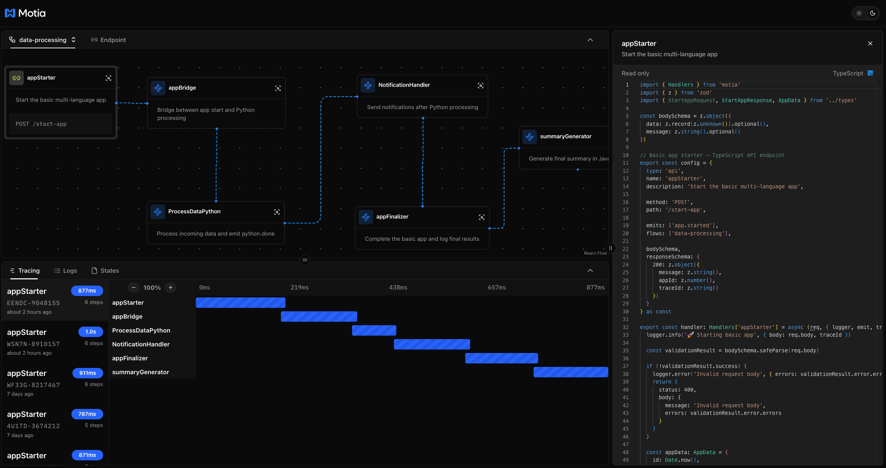
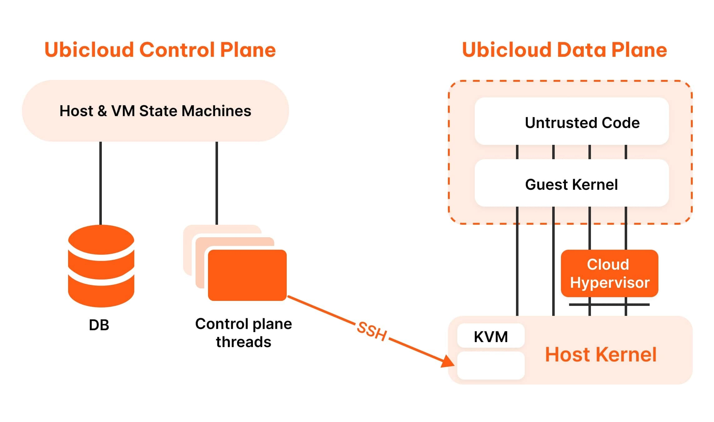
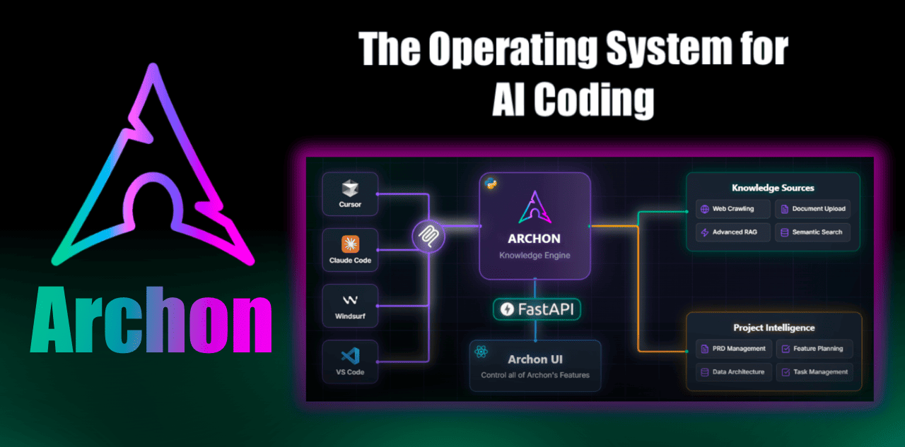
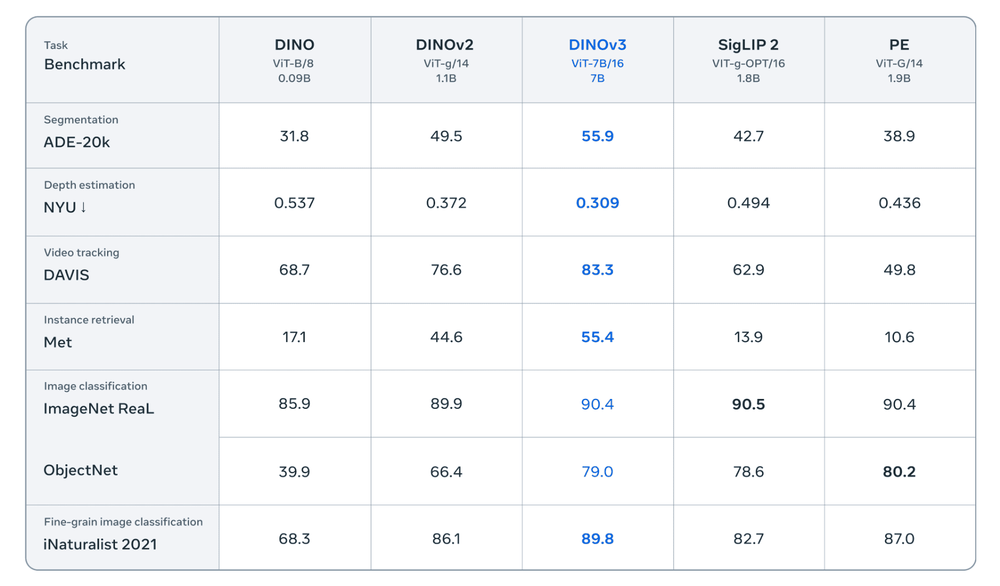
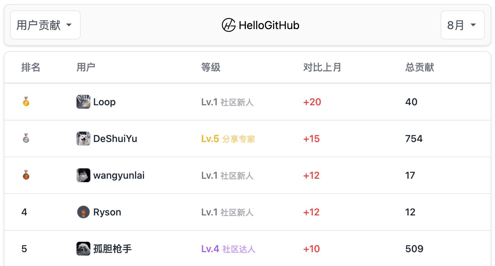
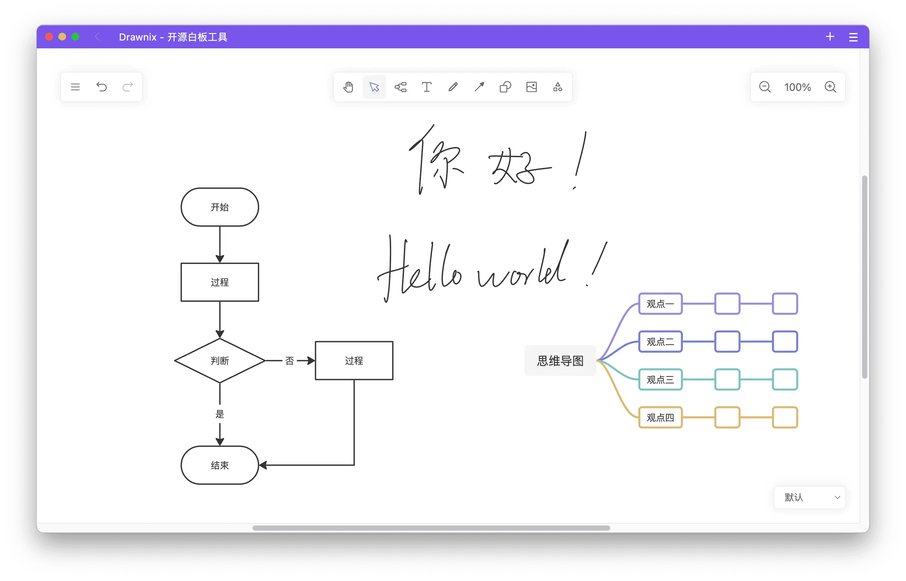
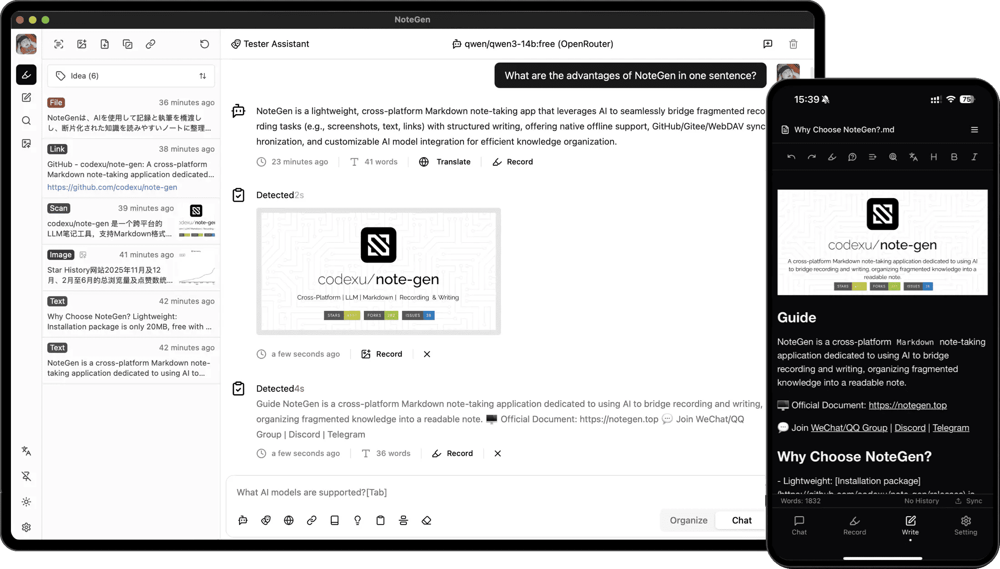

过去一周，虽然大模型、AI 工具依旧层出不穷，但大家似乎对“新瓶装旧酒”的 AI 产品逐渐产生了免疫，只有真正解决开发痛点的开源项目才能脱颖而出。
本周值得关注的开源项目中，FastAPI-MCP 让传统 API 轻松接入 AI 工作流（MCP），Motia 则试图一站式整合后端开发的碎片化问题。自托管 IaaS 平台 Ubicloud，助力开发者拥有属于自己的开源云。而 Archon 则为 AI 编程助手搭建了协作指挥中心，提升项目管理和开发效率。最后，Meta 开源的全能视觉模型 DINOv3，无需微调即可覆盖多种视觉任务，成为视觉领域新的“通用底座”。
此外，本周 HelloGitHub 热评依旧精彩，极简在线白板 Drawnix 和基于 AI 的 Markdown 笔记工具 NoteGen，都为开发者带来了不一样的新体验。
· 本文目录
· 1\. 热门开源项目
· 1.1 轻松将 API 化为 MCP 的框架：FastAPI-MCP
· 1.2 终结后端碎片化的框架：Motia
· 1.3 可自托管的开源云：Ubicloud
· 1.4 AI 编程助手的指挥中心：Archon
· 1.5 无需微调的全能视觉模型：DINOv3
· 2\. HelloGitHub 热评
· 2.1 极简的在线白板工具：Drawnix
· 2.2 基于 AI 的 Markdown 笔记应用：NoteGen
· 3\. 结尾
1. 热门开源项目
1.1 轻松将 API 化为 MCP 的框架：FastAPI-MCP

主语言：Python，Star：9k，周增长：1.9k
该项目让你仅用几行代码就把现有 FastAPI 接口升级为支持 MCP 协议的 AI 工具，并保留原有的鉴权、数据校验和文档，极大降低了传统 API 与 AI 工作流之间的集成门槛，支持独立部署、SSE 流式传输、实时文档同步等功能。
from fastapi import FastAPI
from fastapi_mcp import FastApiMCP
app = FastAPI()
mcp = FastApiMCP(app)
# Mount the MCP server directly to your FastAPI app
mcp.mount()
GitHub 地址→github.com/tadata-org/fastapi_mcp
1.2 终结后端碎片化的框架：Motia

主语言：TypeScript，Star：6.4k，周增长：600
这是一款一站式后端后框架，集成了 API、事件驱动、定时任务、实时数据流和 AI Agent 等能力，支持 TypeScript、Python 等多语言混合开发。它内置状态管理、结构化日志、端到端链路追踪与可视化调试器（Workbench），支持流程图、日志流和实时测试等功能。
GitHub 地址→github.com/MotiaDev/motia
1.3 可自托管的开源云：Ubicloud

主语言：Ruby，Star：9.7k，周增长：4k
这是一款基于 Ruby 开发的开源云基础设施平台（IaaS），可作为云服务提供商的开源替代方案。它拥有简洁、易用的项目与资源管理界面，集成了虚拟机、数据库、负载均衡、存储、网络和安全等资源管理功能，支持在裸金属服务器上快速自建 IaaS，实现真正的云中立。
GitHub 地址→github.com/ubicloud/ubicloud
1.4 AI 编程助手的指挥中心：Archon

主语言：Python，Star 8.5k，周增长：8.5k
这是一款专为 AI 编程助手设计的项目管理平台，让不同 AI 助手共享统一的项目知识与任务进度。它通过 MCP 实现本地知识库与任务板的整合，并与 Cursor、Windsurf 等主流 AI IDE 协同工作，支持多种 AI 助手自动参与项目流程，以及文档编写、版本控制、GitHub 仓库关联等功能。
GitHub 地址→github.com/coleam00/Archon
1.5 无需微调的全能视觉模型：DINOv3

主语言：Python，Star 4.6k，周增长：4.6k
该项目是 Meta 开源的通用视觉基础模型，包含完整的预训练主干网络、适配器、训练和评测代码。它通过自监督学习（SSL）技术，无需微调即可直接应用于分类、检索、深度估计、目标检测等多种主流视觉任务，适用于自动驾驶、遥感、安防监控、工业检测等领域。
GitHub 地址→github.com/facebookresearch/dinov3
2. HelloGitHub 热评
在此章节中，我们将为大家介绍本周 HelloGitHub 网站上的热门开源项目，我们不仅希望您能从中收获开源神器和编程知识，更渴望“听”到您的声音。欢迎您与我们分享使用这些开源项目的亲身体验和评价，用最真实反馈为开源项目的作者注入动力。

2.1 极简的在线白板工具：Drawnix

主语言：TypeScript
这是一款免费、开源的在线白板工具。它提供一个无限画布，支持自由绘制、思维导图、流程图、画笔、插入图片、自动保存等功能，以及移动端适配、Docker 部署和插件机制等特性。
项目详情→hellogithub.com/repository/plait-board/drawnix
2.2 基于 AI 的 Markdown 笔记应用：NoteGen

主语言：TypeScript
这是一款跨平台的 Markdown 笔记应用，专注于用 AI 搭建“记录-写作”的桥梁。它不仅支持截图、文本、插图等多种记录方式，还能通过 AI 模型将这些碎片化内容整理成可读的笔记。
项目详情→hellogithub.com/repository/codexu/note-gen
3. 结尾
以上就是本期「GitHub 热点速览」的全部内容，希望这些开源项目能激发你的兴趣，帮助你找到下一个想要尝试的工具！如果你也发现了好玩、有趣的 GitHub 开源项目想要分享，欢迎来 HelloGitHub 与我们交流心得、讨论使用体验。
往期回顾
· 微软开源的 MCP 教程
· 仅一个 Python 文件，狂揽近 2 万 Star